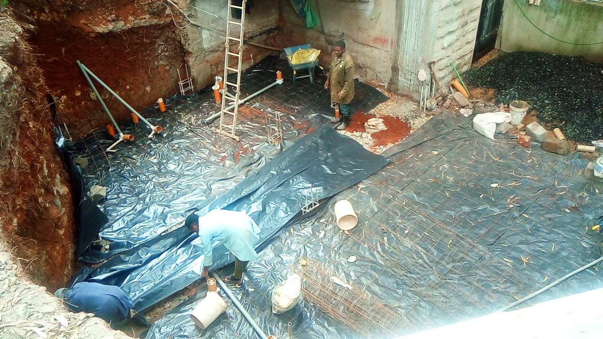
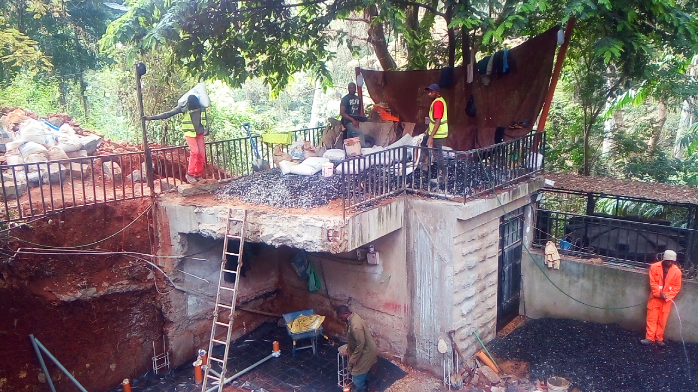
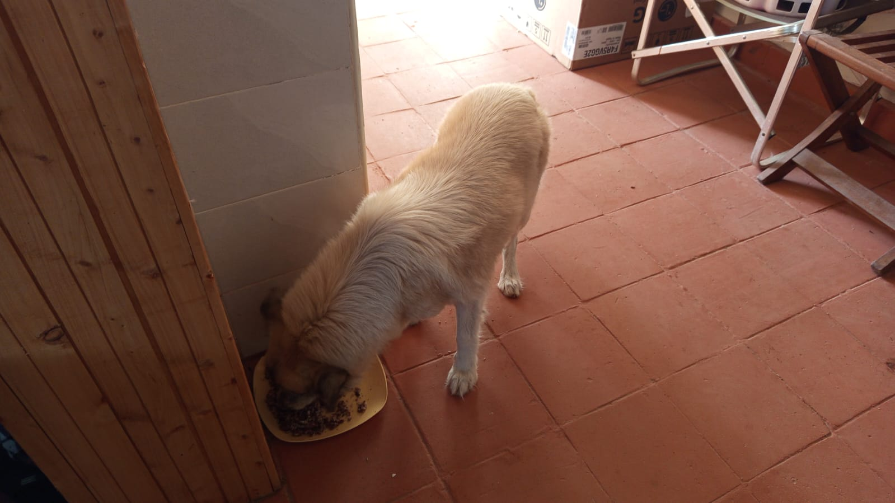

Mucheru World of Golf
Major civil engineering, reservoir sealing, drainage integration, and agronomic turf development were achieved at Mucheru World of Golf on Friday, 2nd October 2026 under the joint supervision of Mr. Gichuhi and Ken:
- Dam 1 Civil & Lining Works 100% Complete: Reservoir 1 achieved full physical and structural completion today. Specialized geomembrane technicians finished connecting and thermal-welding all synthetic liner sheets across the entire basin, anchored the edges into perimeter retention trenches, and precision-leveled the surrounding earthen embankment crest. Dam 1 is now fully prepared and ready for water filling.
- Dam 3 Geomembrane Seam Welding in Progress: Sealing works across Reservoir 3 continued at an accelerated pace. Technicians deployed high-temperature extrusion and wedge welding equipment to join overlapping polyethylene liner panels along the basin floor and slopes.
- Connecting Drainage Trenches Between Dam 3 & Perimeter Drainage: Civil crews engaged in excavating dedicated subsurface interconnection trenches linking Dam 3 directly into the course-wide perimeter drainage network, ensuring controlled overflow and stormwater routing.
- Perimeter Drainage Pipeline Backfilled Past Maina's Place: The main continuous perimeter stormwater drainage pipe was completely backfilled with selected earth and mechanically covered all the way past Maina's place, protecting the pipeline infrastructure and restoring surface grading.
- Surplus Red Soil Application Across 7 Putting Greens: Agronomy crews received 1 full tipper truck delivery of rich red loam topsoil. The entire delivered volume was systematically distributed, spread, and leveled as surplus topsoil across seven specific putting greens: Greens 1, 2, 3, 9, 10, 11, and 12, building up aprons and surrounds to match putting surface design elevations.
Course Infrastructure Milestones Achieved
Dam 1 is 100% complete with liner connected, anchor trenches secured, and embankments leveled—ready for water filling; Dam 3 liner welding is actively underway with interconnecting drainage trenches being excavated; main perimeter drainage pipeline is backfilled past Maina's place; and 1 truck of surplus red soil was applied across Greens 1, 2, 3, 9, 10, 11, and 12.
Comprehensive ground and aerial video documentation capturing today's construction and agronomy milestones at Mucheru World of Golf: full completion of Dam 1 liner connection and leveled circumference embankments, active membrane welding at Dam 3, trench excavation connecting Dam 3 to the perimeter drainage system, backfilled perimeter drainage pipe past Maina's place, and surplus red soil spreading across Greens 1, 2, 3, 9, 10, 11, and 12.
18-hole putting green status audit showing the latest work completed and current condition for each green as of October 2, 2026:
| Green | Current Technical & Agronomic State | Milestone Status |
|---|---|---|
| Green 1 Today | Surplus red soil (from 1 truck delivery) applied and leveled around collar and surrounds (Oct 2). | Surplus Red Soil Applied |
| Green 2 Today | Surplus red soil (from 1 truck delivery) applied and leveled around collar and surrounds (Oct 2). | Surplus Red Soil Applied |
| Green 3 Today | Surplus red soil (from 1 truck delivery) applied and leveled around collar and surrounds (Oct 2). | Surplus Red Soil Applied |
| Green 4 | Surplus red soil spread and leveled around surrounds per Joe's instructions (Oct 1). | Surplus Red Soil Applied |
| Green 5 | Water pipeline connected from Peter's supply; overhead sprinklers running on mature grass (Sep 29). | Water Connected • Sprinklers On |
| Green 6 | Surplus red soil applied to raise and level surrounds (Sep 28). | Apron Raised • Palms Placed |
| Green 7 | Received 1 lorry riversand delivery (2 lorries delivered to date) (Oct 1). | Riversand Delivered |
| Green 8 | Surplus red soil spread and leveled around surrounds per Joe's instructions (Oct 1). | Surplus Red Soil Applied |
| Green 9 Today | Surplus red soil (from 1 truck delivery) applied and leveled around collar and surrounds (Oct 2). | Surplus Red Soil Applied |
| Green 10 Today | Surplus red soil (from 1 truck delivery) applied and leveled around collar and surrounds (Oct 2). | Surplus Red Soil Applied |
| Green 11 Today | Surplus red soil (from 1 truck delivery) applied and leveled around collar and surrounds (Oct 2). | Surplus Red Soil Applied |
| Green 12 Today | Surplus red soil (from 1 truck delivery) applied and leveled around collar and surrounds (Oct 2). | Surplus Red Soil Applied |
| Green 13 | Surplus red soil spread around surrounds to raise and match green level (Sep 29). | Surplus Red Soil Applied |
| Green 14 | Surplus red soil spread around surrounds to build up perimeter level (Sep 29). | Surplus Red Soil Applied |
| Green 15 | Surplus red soil spread around surrounds to raise perimeter level (Sep 28). | Apron Raised • Compacted |
| Green 16 | Surplus red soil spread around surrounds to blend with fairway (Sep 29). | Surplus Red Soil Applied |
| Green 17 | Surplus red soil spread around surrounds to raise and align levels (Sep 29). | Surplus Red Soil Applied |
| Green 18 | Surplus red soil spread and leveled around collar and surrounds (Sep 30). | Surplus Red Soil Applied |
Comprehensive 18-hole championship teebox platform audit tracking earthwork leveling, structural embankments, and playing corridor alignments as of October 2, 2026:
| Teebox | Current Technical & Earthwork State | Platform Status |
|---|---|---|
| Tee 1 | Championship launch platform completely reshaped, cut, and graded to design elevation using Backhoe Loader (Sep 24); received 1 lorry red soil delivery (Sep 26). | Platform Reshaped |
| Tee 2 | Playing launch platform completely reshaped, contoured, and graded using Backhoe Loader (Sep 24); received 1 lorry red soil delivery (Sep 26). | Platform Reshaped |
| Tee 3 | Playing launch platform completely reshaped, contoured, and graded using Backhoe Loader (Sep 24); received 1 lorry red soil delivery (Sep 26). | Platform Reshaped |
| Tee 4 | Championship launch platform completely reshaped, cut, and graded using Backhoe Loader (Sep 23); received 1 lorry red soil delivery (Sep 26). | Platform Reshaped |
| Tee 5 Today | Main perimeter drainage pipeline backfilled all the way past Maina's place (Oct 2). | Drainage Backfilled |
| Tee 6 | Precision leveling and compaction completed; fresh delivery of 1 lorry red loam topsoil unloaded at platform surrounds (Sep 26). | Red Soil In • Leveled |
| Tee 7 | Crowded corner palm uprooted and relocated; additional palm brought and planted into vacant hole (Oct 1). | Palms Relocated & Planted |
| Tee 8 | Graded, leveled, and contour-adjusted; fresh delivery of 1 lorry red loam topsoil unloaded directly on platform (Sep 26). | Red Soil In • Graded |
| Tee 9 | Playing platform leveled and surrounding perimeter ground graded (Sep 1); received 1 lorry red soil delivery (Sep 26). | Platform Leveled |
| Tee 10 | Graded and compacted platform serving the start of the back-nine playing corridor; received 1 lorry red soil delivery (Sep 26). | Platform Compacted |
| Tee 11 | Rough shaping, elevation grading, and Backhoe subsoil leveling completed (Sep 7); received 1 lorry red soil delivery (Sep 26). | Shaped & Graded |
| Tee 12 | Dual platforms established: primary championship tee resized; new forward Ladies' Tee platform constructed (Sep 5); received 1 lorry red soil delivery (Sep 26). | Dual Platforms Complete |
| Tee 13 | Playing platform completely reshaped, contour-cut, and precision leveled to design elevations using Backhoe Loader (Sep 25); received 1 lorry red soil delivery (Sep 26). | Platform Reshaped |
| Tee 14 | Playing platform reshaped, elevation precision-leveled, and protective boundary embankment reinforced (Sep 16); received 1 lorry red soil delivery (Sep 26). | Reshaped & Leveled |
| Tee 15 | Playing platform completely shaped and contour-leveled with backhoe loader (Sep 19); received 1 lorry red soil delivery (Sep 26); main HDPE waterline laid in boundary trench (Sep 15). | Shaped & Leveled |
| Tee 16 | Protective earthen boundary barrier between Tee 16 and Green 16 reshaped, graded, and reinforced using Backhoe Loader (Sep 25); received 1 lorry red soil delivery (Sep 26); platform leveled (Sep 20). | Barrier Berm Reworked |
| Tee 17 | Championship launch platform completely reshaped, contour-cut, and precision-graded to design elevation using Backhoe Loader (Sep 25); received 1 lorry red soil delivery (Sep 26). | Platform Reshaped |
| Tee 18 | Championship tee platform leveled; perimeter approach cleared and graded (Sep 1); received 1 lorry red soil delivery (Sep 26). | Platform Leveled |
Operations Agronomy & Engineering Synthesis
Putting Greens Progress: 18 of 18 greens (100%) have subgrade foundations excavated and membrane lined; 18 of 18 (100%) have volcanic pumice layers compacted; 18 of 18 (100%) have riversand foundation beds placed; all 18 greens (100%) have received surplus red soil application; fresh delivery of 1 truck red soil applied today across Greens 1, 2, 3, 9, 10, 11, and 12; Green 5 is 100% grass-established under active sprinkler irrigation.
Reservoir Infrastructure & Earthworks: Dam 1 is 100% complete with liners welded, anchor trenches covered, and circumference embankments leveled—ready for water addition; Dam 3 liner welding is actively progressing; connecting trenches between Dam 3 and the perimeter drainage network are being excavated; main perimeter drainage pipeline is backfilled past Maina's place; boundary fencing is 100% complete with contractor demobilized.
Sequential field photographic documentation covering Dam 1 completion, Dam 3 liner welding, interconnecting drainage trenching, backfilled perimeter pipeline, and surplus red soil application across greens:

Dam 1 Infrastructure — Completed Embankment Circumference
Overview of Reservoir 1 showcasing fully connected synthetic liners, secured perimeter anchor trenches, and precision-leveled earthen embankments ready for water filling.

Dam 1 Milestones — 100% Basin Sealing & Preparation
Full-basin perspective documenting completed synthetic membrane seaming across Dam 1 with leveled crest berms awaiting water impoundment.

Dam 3 Earthworks — Civil Crew Preparing Basin Subgrade
Laborers and technicians working across the interior bed of Dam 3, preparing smooth subgrade contours prior to geomembrane seaming.

Dam 3 Sealing — Polyethylene Liner Placement in Progress
Artisans unrolling and positioning heavy-gauge geomembrane sheets along the earthen slopes of Dam 3 for thermal jointing.

Dam 3 Geomembrane — Thermal Seam Welding Across Basin
Specialized lining crew operating thermal welding equipment to seal adjacent polyethylene membrane panels across the Reservoir 3 basin.

Dam 3 Reservoir Sealing — Joining Membrane Panels
Close-up inspection of liner overlap and seam welding operations underway along the floor and stepped sides of Dam 3.

Drainage Infrastructure — Excavating Connection Trench
Laborers hand-digging deep drainage trenches to connect Dam 3 overflow outlets directly into the perimeter drainage network.

Perimeter Integration — Open Trench for Dam 3 Overflow
Wide perspective of the cleanly cut connector trench traversing the golf course grounds toward the main perimeter drainage alignment.

Perimeter Drainage — Backfilled Pipeline Past Maina's Place
Completed backfilling and surface grading over the main perimeter drainage pipe route, securely burying the storm conduit.

Perimeter Alignment — Subsurface Pipeline Restored
Smooth, backfilled boundary corridor along the outer estate perimeter with the stormwater pipeline safely interred below ground level.
%20surplus%20applied%20to%20green%201.JPG)
Agronomic Topsoil — Surplus Red Soil Applied to Green 1
Spreading delivered red loam topsoil around the surrounds and collar of Green 1, establishing uniform playing contours.
%20surplus%20applied%20to%20green%203.jpeg)
Surrounds Dressing — Surplus Red Soil Spread at Green 3
Fine red loam soil distributed across the outer collar perimeter of Green 3, blending the putting green apron into the fairway approach.
%20surplus%20applied%20to%20respective%20green%203.jpeg)
Collar Feathering — Fine Leveling Red Soil at Green 3
Detailed view of agronomic team manually raking and leveling topsoil around the Green 3 perimeter according to design elevations.
%20surplus%20applied%20to%20green%209.JPG)
Putting Green Contouring — Red Soil Applied Around Green 9
Fresh topsoil application across the apron perimeter of Green 9, building up grade levels adjacent to the pumice and sand putting surface.
%20surplus%20applied%20to%20green.JPG)
Fairway Transition — Red Soil Spreading Across Approaches
Spreading quality red loam topsoil over the green apron and surrounds, ensuring smooth transitions between course surfaces.
%20surplus%20applied%20to%20green_01.JPG)
Course Surrounds — Surplus Red Soil Finished and Leveled
Completed application and surface smoothing of surplus red loam soil along green perimeters, concluding the 1 truck topsoil distribution.
Chaka Farms
Daily operations at Chaka Farms on Friday, 2nd October 2026 encompassed estate utility diagnostics and troubleshooting, concrete base slab setup for the main drainage manifold, tractor material haulage for the rock garden and drainage manifold, dairy milking yield reconciliation, farm crop planting, and canine routines:
- Estate Water & Electricity Systems Diagnostics (Ken): During the day, operational interruptions were identified on farm utility networks. Water was not reaching certain facilities, including the guesthouse and washrooms. In addition, compound security floodlights were failing to remain on for more than 10 minutes before extinguishing. Ken conducted detailed troubleshooting across supply piping and electrical lines, identifying the exact root causes for both issues. Comprehensive repairs and remediation works are planned and scheduled for execution tomorrow.
- Main Drainage Connection Manifold Base Slab Setup (Ken): Masonry crews set up and cast the concrete base slab at the main drainage connection manifold. This concrete foundation slab establishes the necessary structural footing to begin building the permanent chamber walls for the manifold.
- Rock Garden Quarry Rocks Haulage (Kinoti): The estate tractor hauled loads of building rocks from the quarry and staged them close to the main house at Chaka Farms specifically for constructing the new rock garden.
- Drainage Manifold Ballast Aggregate Haulage (Kinoti): The tractor transported clean crushed ballast stone aggregate from the golf course site to the greenhouse area, directly supplying the civil crew working on the drainage manifold.
- Tractor Fence Posts Haulage & Registration Plate Installation (Kinoti): Felled treated cedar fence posts were hauled from the golf development parcel to the greenhouse storage facility. In addition, mechanical technicians mounted official registration number plates (ZJ 5334) onto the rear tailgate of the estate's red tipping trailer.
- Dairy Cow Milk Production & Sales Reconciliation (Kamandau): Morning and evening milking routines were executed with precision. Gross cow milk harvest totaled 6.0 Litres. Commercial sales dispatched off-farm totaled 4.0 Litres (2.0L morning / 2.0L evening). Routine internal farm disbursements accounted for 2.0 Litres (1.0L goat kids ration [0.5L morning + 0.5L evening], 0.5L Gladys staff ration, and 0.5L Maasai security ration), achieving 100% volume accounting with zero discrepancy.
- Cultivated Farm Maize Planting & Compound Upkeep (Margaret & Monica): Grounds staff maintained cleanliness across the compound environs, and completed planting maize seeds across the cultivated farm parcel in preparation for seasonal germination.
- Canine Unit Manners, Leash Discipline & Goat Socialization (Willy): Routine kennel cleaning was conducted alongside crate manners and "paw" command conditioning. The canine pack completed afternoon off-leash exercise across farm paddocks, followed by a dedicated socialization session where working dogs (Mali, Zara, and Coby) grazed calmly alongside dairy goats without reactive behavior. Updates shared by Njoki.
Chaka Farms Operations Summary
Water and power issues diagnosed with repairs planned tomorrow; drainage manifold concrete base slab cast; rocks hauled from quarry for the rock garden; ballast moved from golf site for the drainage manifold crew; trailer fitted with registration plates (ZJ 5334); 6.0L gross dairy harvest fully reconciled; maize seeds planted; and canine herd grazing socialization completed.
Quantitative reconciliation of gross dairy harvest, commercial sales dispatches, and internal farm allocations for Friday, 2nd October 2026:
| Production & Allocation Category | Morning Session | Evening Session | Daily Total | Accounting Classification |
|---|---|---|---|---|
| Commercial Milk Sales (Dispatched) | 2.0 L | 2.0 L | 4.0 L | Commercial Sales Outflow |
| Goat Kids Milk Ration | 0.5 L | 0.5 L | 1.0 L | Internal Farm Allocation (Livestock) |
| Gladys Allocation (Staff) | 0.5 L | — | 0.5 L | Internal Farm Allocation (Staff) |
| Maasai Allocation (Security) | 0.5 L | — | 0.5 L | Internal Farm Allocation (Security) |
| Total Internal Farm Allocations | 2.0 L | Total Internal Outflow | ||
| Total Gross Cow Milk Harvested (Sales + Allocations) | 6.0 L | 100% Accounted Production (3.0L AM / 3.0L PM) | ||
📌 Ground Truth Accounting Note
In accordance with the estate milk reconciliation standard established on October 1st, Kamandau's recorded sales of 2.0L morning and 2.0L evening represent commercial milk sold (4.0L total). When added to routine internal farm disbursements (1.0L goat kids ration, 0.5L Gladys staff ration, and 0.5L Maasai security ration), total gross cow milk harvested stands at exactly 6.0 Litres with zero discrepancy.
Sequential field photographic documentation covering maize planting, drainage manifold concrete slab construction, fence posts haulage, drainage manifold ballast aggregate delivery, rock garden quarry stone transport, and tractor trailer number plate installation:

Farm Cultivation — Planting Maize Seeds in Field
Agricultural staff planting maize seeds into freshly tilled soil across the cultivated parcel in preparation for seasonal germination.

Civil Infrastructure — Drainage Manifold Base Slab
Freshly cast concrete base slab prepared at the main drainage connection manifold, establishing the structural footing to erect the chamber wall.

Material Logistics — Fencing Posts Haulage to Greenhouse
Farm tractor and red trailer loaded with treated cedar fence posts transported from the golf course to the Chaka Farms greenhouse storage facility.

Estate Logistics — Hauling Timber & Posts to Greenhouse
Field crew securing and transporting treated posts and boundary timber across the estate corridor to the greenhouse compound.

Aggregate Transfer — Crushed Ballast for Drainage Works
Red tipping trailer discharging clean crushed ballast stone aggregate near the greenhouse staging point for civil construction.

Drainage Materials — Ballast Delivery for Manifold Crew
Ballast stone aggregate transported directly from the golf development site to support artisans constructing the main drainage connection manifold.

Quarry Logistics — Manual Hardcore Rock Loading
Artisans loading heavy hardcore building stones from the quarry stock by hand into the tractor trailer for transport to the main house.

Hardcore Stone Haulage — Loading Tractor Trailer
Field crew working systematically at the hillside quarry, filling the trailer bed with structural stones destined for the main house perimeter.

Landscape Architecture — Rock Garden Material Transit
Tipping trailer hauling quarry stones to the immediate perimeter of the Chaka Farms main house to establish the new rock garden.

Landscape Construction — Staging Rocks for Rock Garden
Offloaded quarry rocks positioned near the main house grounds, ready for artisan arrangement into the planned decorative rock garden.

Machinery Compliance — Registration Number Plate Installation
Technician mounting official Kenyan yellow registration plate (ZJ 5334) onto the rear tailgate of the estate's red tipping trailer.
Kabete Residence
Extensive civil construction, structural steel fabrication, plumbing maintenance, joinery installation, and grounds upkeep were executed at Kabete Residence on Friday, 2nd October 2026. Daily updates were overseen and shared by Njoki:
- Foundation Base Slab Sub-base Setup Completed: Masonry crews completed all preliminary preparation across the excavated foundation pit. Heavy black damp proof membrane (DPM) polythene sheeting was rolled out across the subgrade, followed by the positioning and tying of welded BRC fabric wire mesh reinforcement, rebar column starter cages, and subsurface PVC drainage pipe branches with vertical gully stubs.
- Foundation Concrete Base Slab Pour & Casting: Concrete mixing and casting commenced in full force. Laborers wheeled continuous batches of dense aggregate concrete down into the pit, systematically spreading and leveling the wet concrete over the BRC mesh reinforcement.
- Mechanical Poker Vibration of Base Slab: A mechanical engine-driven poker vibrator was operated continuously throughout the pour. The vibrating needle was immersed across all sections of the wet concrete to eliminate entrapped air voids, consolidate the mix around steel reinforcements, and ensure a monolithic, high-strength structural base slab.
- Forest Retaining Wall Column & Bar Bending Completed: On the steep forest slope descending toward the river, steel fixing artisans completed bending, shaping, and tying structural steel rebar footings, vertical column cages, and stirrup links for the mass-gravity retaining wall designed to permanently stabilize the slope.
- Indoor Workout Pull-Up Bar Installation: A heavy-duty black fitness pull-up bar was installed at the main house. Technicians drilled and anchored custom hardwood mounting blocks into the wooden doorframe, securely clamping the workout bar in place for home fitness.
- Storage Tank Booster Pump PPR Union Replacement: Maintenance plumbers inspected the main water storage tank booster pump assembly, removing a worn green PPR union fitting wrapped in Teflon tape and replacing it with a new high-pressure connection to prevent pressure leaks.
- Estate Lawn Mowing & Turf Trimming: Grounds keepers operated a motorized push lawnmower across the expansive lawn, cutting and leveling the grass along stone garden embankments and paved walkways.
- Domestic Pet Wellness Care: Daily nutrition and wellness routines were completed for Kabete resident pets. Ajabu the Golden Retriever enjoyed his meal on the veranda, while resident cats (Reo, Mocha & Aiko) dined side-by-side from clean stainless steel bowls.
Kabete Residence Milestone Achievements
Major construction milestones achieved: foundation base slab setup complete, concrete poured, compacted with poker vibrator, and finished; forest retaining wall column cages bent and tied; workout pull-up bar mounted; pump PPR union replaced; and estate lawn manicured.
Sequential field photographic documentation covering foundation setup, concrete pouring, poker vibration, retaining wall rebar, pull-up bar installation, plumbing maintenance, lawn trimming, and domestic pet care:

Foundation Sub-base — DPM Sheet & BRC Mesh Laid
Excavated foundation pit floor covered in heavy black DPM waterproof membrane, topped with welded BRC fabric mesh and tied rebar columns.

Civil Works — Aligning Waterproofing & Drainage Conduits
Artisans smoothing DPM polythene sheeting, tying wire mesh, and setting PVC drainage branch connections in place across the foundation bed.

Site Overview — Excavation Pit & Deck Staging Area
Elevated perspective showing laborers handling bagged materials on the upper terrace, clean ballast aggregate, and pit preparation below.

Subsurface Infrastructure — Drainage Pipe Branches & Rebar Starters
Orange PVC vertical pipe stubs, drainage connectors, and vertical column rebar cages bedded within crushed aggregate prior to casting.

Concrete Casting — Wheelbarrow Pours into Foundation Pit
Construction workers pushing wheelbarrows of freshly mixed concrete aggregate down into the pit, discharging directly over the BRC mesh.

Concrete Placement — Spreading & Leveling Base Slab
Overhead view of masonry crew spreading wet concrete across the foundation bed, leveling the slab to design depth with hand tools.

Mechanical Compaction — Poker Vibrator Operation
Artisan in rubber boots immersing a mechanical poker vibrator needle through wet concrete to consolidate the mix and remove air voids.

Completed Foundation — Cast Concrete Base Slab
Panoramic view of the freshly cast monolithic concrete foundation base slab, fully compacted and screeded to structural level.

Forest Retaining Wall — Rebar Column Cages & Footings
Completed structural rebar column cages and link stirrups tied along the stepped earthen slope descending toward the river boundary.

Indoor Joinery — Drilling Doorframe Mounting Block
Artisan using a cordless electric drill to fasten custom wooden mounting support blocks onto the main house doorframe.

Completed Fixture — Mounted Fitness Pull-Up Bar
Heavy-duty fitness workout bar securely clamped between hardwood support blocks across the upper wooden doorframe.

Plumbing Maintenance — Replaced Pump PPR Union
Worn green PPR threaded pipe union wrapped in Teflon tape successfully replaced on the main water storage tank booster pump line.
.jpeg)
Grounds Maintenance — Motorized Lawn Mowing
Grounds keeper operating a motorized rotary mower, precision-cutting turf along the paved perimeter walkway and garden terrace.
.jpeg)
Estate Landscaping — Lawnmower Manicuring Turf
Wide perspective of the manicured Kabete Residence front garden lawn showing clean, even cutting lines across the green expanse.

Domestic Pet Care — Ajabu Mealtime
Ajabu the Golden Retriever happily enjoying his nutritious meal from a dish on the cool tiled veranda floor at Kabete Residence.

Domestic Pet Care — Reo, Mocha & Aiko Feeding Routine
Resident cats Reo, Mocha, and Aiko dining peacefully side-by-side from clean stainless steel bowls in the hallway corridor.
Rose Park Apartment
Renovation and architectural painting progressed across Rose Park Apartment on Friday, 2nd October 2026, achieving completion across several key interior and exterior living spaces. Daily updates were overseen and shared by Njoki:
- Back Door Patio Floor Tile Paintwork Completed: Artisan painters thoroughly prepared and applied high-durability terracotta red floor tile paint across the back door entrance patio, creating a rich, uniform, weather-resistant finish across the tiled walkway.
- Back Door Security Grill Painting: The metal security entrance gate and flanking railing grills were finished in high-gloss protective black enamel paint, providing clean contrast against the newly painted terracotta floor.
- Staff Quarters (SQ) Interior Paintwork: Full interior painting was completed across the Rose Park apartment Staff Quarters (SQ), leaving walls, ceilings, and trim fresh and pristine.
- Comprehensive Window Painting Across Living Spaces: Specialized painters completed multi-coat black gloss enamel on window security grills and rich terracotta red paint on external window sills across all specific functional zones:
- Bedroom Area Window: Grills painted in deep gloss black with a freshly brushed red exterior sill.
- Bathroom Area Window: Moisture-resistant black metal bars finished with a clean red sill accent.
- Sitting Room Area Window: Tall multi-pane architectural window assembly completed in pristine gloss black enamel with terracotta sill.
- Laundry Area Utility Window: Security grills painted in high-gloss black alongside ornamental concrete breeze blocks with fresh sill paint.
Rose Park Renovation Milestone
All target painting areas reached completion: back door patio floor tiles coated in rich terracotta red, entrance security grills coated in gloss black enamel, SQ room interior fully painted, and all exterior windows (bedroom, bathroom, sitting room, laundry) finished with black grills and red sills.
Sequential field photographic documentation covering back door patio tile painting, security gate grills, SQ interior painting, and zone-by-zone window finishing:

Floor Refurbishment — Completed Terracotta Tile Paint
Back entrance patio floor showcasing freshly painted terracotta red tiles with crisp grout lines and uniform surface coating.

Security Metalwork — Black Gloss Entrance Grills
Freshly painted high-gloss black enamel coating on the back door security gate and railing, overlooking the newly painted tile floor.

Back Veranda — Completed Gate, Railings & Tile Floor
Full-length view of the refurbished back entrance showing the harmonious pairing of gloss black security metalwork and warm terracotta floor tiles.

Interior Refurbishment — Staff Quarters (SQ) Painting
Staff Quarters interior room showing fresh wall and ceiling paint with illuminated fluorescent lighting and tidy furnishings.

Bathroom Window — Applying Terracotta Sill Paint
Artisan painter brushing rich terracotta paint along the concrete sill beneath the black gloss security window grill of the bathroom.

Bedroom Window — Precision Brushwork on Exterior Sill
Painter applying final coat of terracotta red enamel to the bedroom window sill, perfectly complementing the cured gloss black window frame.

Sitting Room Window — Completed Gloss Black Frame & Sill
Tall multi-pane sitting room window featuring flawless high-gloss black security bars, freshly painted red sill, and decorative potted plants.

Laundry Utility Window — Refurbished Grills & Sill
Utility window outside the laundry area completed with glossy black protective bars and terracotta sill beside concrete breeze blocks.

Architectural Detailing — Exterior Sill Coating Close-Up
Detailed perspective of artisan applying smooth protective paint to the stone sill, concluding multi-area window refurbishment.
Amani Cottage
Comprehensive interior housekeeping, exterior grounds maintenance, landscape plant care, and utility consumption tracking were conducted at Amani Cottage on Friday, 2nd October 2026 under the supervision of Jane and Edwin:
- Full Interior Housekeeping Across Both Levels (Jane): Jane performed comprehensive cleaning throughout Amani Cottage. In the downstairs living room, stone tiled floors were swept and mopped, the large white sectional sofa was cleaned and cushions styled, and the stone fireplace hearth was tidied. The modern kitchen was thoroughly cleaned with polished wooden cabinetry, wiped island countertops, and washed sink areas. Upstairs, timber hardwood floors were swept and polished, carpets vacuumed and aligned, and the entertainment lounge furniture neatly arranged.
- Balconies Washing & Terrace Sanitation (Jane): Both outdoor stone-tiled balconies and veranda terraces were thoroughly washed down with a garden hose and swept, eliminating dust and debris around outdoor furniture, planters, and the brick fireplace.
- Landscape Pruning, Flower Watering & Litter Clearance (Jane): Jane carried out outdoor grounds maintenance across the cottage compound, including systematic pruning of garden shrubs and trees, watering flower beds and potted balcony plants, and sweeping fallen leaves and litter from the lawn and stone pathways.
- Daily Water Consumption Tracking (0.6 Units / 600 Litres) (Edwin): Edwin conducted the routine 24-hour water meter inspection. The mechanical water meter (Iberconta serial unit) registered a reading of 5,036.6 m³ today, advancing by 0.6 m³ from yesterday's reading of 5,036.0 m³.
| Utility Category | Previous Reading (Oct 1) | Current Reading (Oct 2) | Daily Consumption | Status & Verification |
|---|---|---|---|---|
| Amani Cottage Main Supply Meter | 5,036.0 m³ | 5,036.6 m³ | 0.6 Units (600 L) | Verified via Meter Photograph |
| Total Daily Water Utilized | 0.6 Units (600 Litres) — Normal Consumption Range | |||
Amani Cottage Operations Summary
Jane executed full interior housekeeping across upstairs, downstairs, and kitchen, washed outdoor balconies, pruned compound shrubs, watered flowers, and swept lawn litter; Edwin verified daily water consumption of 0.6 units (600 L) via mechanical meter audit.
Photographic documentation of compound grounds upkeep, balcony washing, two-level interior housekeeping, and daily utility meter auditing:

Compound Upkeep — Swept Lawn, Shrub Pruning & Grounds
Pristine cottage front lawn and grounds cleared of litter and fallen leaves, featuring pruned landscape trees, shrubs, and stone stepping-stone path.

Balcony Sanitation — Freshly Washed Stone Terrace
Outdoor stone-tiled balcony washed clean with garden hose, showcasing watered potted plants, brick outdoor fireplace, and spotless tile surfaces.

Interior Housekeeping — Cleaned Downstairs Living Room
Overhead view of the downstairs living area with swept and mopped stone floor, styled white sectional sofa, arranged cushions, and tidied hearth.

Kitchen Maintenance — Clean Countertops & Cabinetry
Modern cottage kitchen showing wiped central island countertops, organized appliances, clean sink basin, and polished cabinetry.

Upstairs Lounge — Arranged Entertainment Seating
Immaculately organized upstairs lounge with curved cream leather sectional seating, cowhide center table, aligned rug, and spotless balcony access.

Floor Finishing — Polished Hardwood Timber Flooring
Close perspective of the swept and polished natural hardwood plank flooring leading into the upstairs living quarters.

Baseline Water Meter Reading — Thursday, 1st Oct
Mechanical water meter dial documenting the baseline consumption index reading of 5,036.0 m³.

Current Water Meter Reading — Friday, 2nd Oct
Mechanical water meter dial documenting current reading of 5,036.6 m³, confirming exact consumption of 0.6 units (600L).